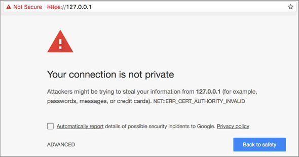

This appendix provides a step-by-step guide to running deep-learning Jupyter notebooks on an AWS GPU instance and editing the notebooks from anywhere in your browser. This is the perfect setup for deep-learning research if you don’t have a GPU on your local machine. The original (and up-to-date) version of this guide can be found at https://blog.keras.io.
A Jupyter notebook is a web app that allows you to write and annotate Python code interactively. It’s a great way to experiment, do research, and share what you’re working on.
Many deep-learning applications are very computationally intensive and can take hours or even days when running on a laptop’s CPU cores. Running on a GPU can speed up training and inference by a considerable factor (often 5 to 10 times, when going from a modern CPU to a single modern GPU). But you may not have access to a GPU on your local machine. Running Jupyter notebooks on AWS gives you the same experience as running on your local machine, while allowing you to use one or several GPUs on AWS. And you only pay for what you use, which can compare favorably to investing in your own GPU(s) if you use deep learning only occasionally.
AWS GPU instances can quickly become expensive. The one we suggest using costs $0.90 per hour. This is fine for occasional use; but if you’re going to run experiments for several hours per day every day, then you’re better off building your own deep-learning machine with a TITAN X or GTX 1080 Ti.
In summary, use the Jupyter-on-EC2 setup if you don’t have access to a local GPU or if you don’t want to deal with installing Keras dependencies, in particular GPU drivers. If you have a access to a local GPU, we recommend running your models locally, instead. In that case, use the installation guide in appendix A.
Note
You’ll need an active AWS account. Some familiarity with AWS EC2 will help, but it isn’t mandatory.
The following setup process will take 5 to 10 minutes:
Figure B.5. Configure a new security group.
Note
At the end of the launch process, you’ll be asked if you want to create new connection keys or if you want to reuse existing keys. If you’ve never used EC2 before, create new keys and download them.
$ mkdir ssl $ cd ssl
$ openssl req -x509 -nodes -days 365 -newkey rsa:1024 -keyout "cert.key" -out
➥ "cert.pem" -batch
Before you use Jupyter, you need to touch up its default configuration. Follow these steps:
$ jupyter notebook --generate-config
from IPython.lib import passwd passwd() exit
sha1:b592a9cf2ec6:b99edb2fd3d0727e336185a0b0eab561aa533a43Note that this is a hash of the word password, which isn’t a password you should be using.
$ vi ~/.jupyter/jupyter_notebook_config.py
c = get_config() ❶ c.NotebookApp.certfile = u'/home/ubuntu/ssl/cert.pem' ❷ c.NotebookApp.keyfile = u'/home/ubuntu/ssl/cert.key' ❸ c.IPKernelApp.pylab = 'inline' ❹ c.NotebookApp.ip = '*' ❺ c.NotebookApp.open_browser = False ❻ c.NotebookApp.password = ❼ ➥ 'sha1:b592a9cf2ec6:b99edb2fd3d0727e336185a0b0eab561aa533a43' ❼
❶ Gets the config object
❷ Path to the certificate you generated
❸ Path to the private key you generated for the certificate
❹ Inline figure when using Matplotlib
❺ Serves the notebooks locally
❻ Don’t open a browser window by default when using notebooks.
❼ Password hash you generated earlier
Note
In case you aren’t accustomed to using vi, remember that you need to press I to begin inserting content. When you’re finished, press Esc, enter :wq, and press Enter to quit vi and save your changes (:wq stands for write-quit).
You’re almost ready to start using Jupyter. But first, you need to update Keras. A version of Keras is preinstalled on the AMI, but it may not necessarily be up to date. On the remote instance, run this command:
$ sudo pip install keras --upgrade
Because you’ll probably use Python 3 (the notebooks provided with this book use Python 3), you should also update Keras using pip3:
$ sudo pip3 install keras --upgrade
If there’s an existing Keras configuration file on the instance (there shouldn’t be, but the AMI may have changed since I wrote this), you should delete it, just in case. Keras will re-create a standard configuration file when it’s launched for the first time.
If the following code snippet returns an error saying that the file doesn’t exist, you can ignore it:
$ rm -f ~/.keras/keras.json
In a shell on your local machine (not the remote instance), start forwarding your local port 443 (the HTTPS port) to port 8888 of the remote instance:
$ sudo ssh -i awsKeys.pem -L local_port:local_machine:remote_port remote_machine
In my case, it would look like the following:
$ sudo ssh -i awsKeys.pem -L
➥ 443:127.0.0.1:8888 ubuntu@ec2-54-147-126-214.compute-1.amazonaws.com
On the remote instance, clone the GitHub repository containing the Jupyter notebooks associated with this book:
$ git clone https://github.com/fchollet/deep-learning-with-python-notebooks.git cd deep-learning-with-python-notebooks
Start Jupyter Notebook by running this command, still on the remote instance:
$ jupyter notebook
Then, in your local browser, navigate to the local address you’re forwarding to the remote notebook process (https://127.0.0.1). Be sure you use HTTPS in the address, or you’ll get an SSL error.
You should see the safety warning shown in figure B.7. This warning is due to the fact that the SSL certificate you generated isn’t verified by a trusted authority (obviously—you generated your own). Click Advanced, and proceed to navigate.
Figure B.7. A safety warning you can ignore

You should be prompted to enter your Jupyter password. You’ll then arrive at the Jupyter dashboard (see figure B.8).
Figure B.8. The Jupyter dashboard
Choose New > Notebook to get started (see figure B.9). You can use the Python version of your choice. All set!